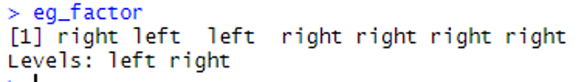
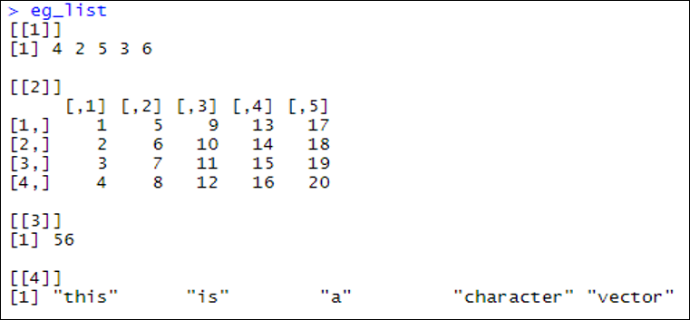
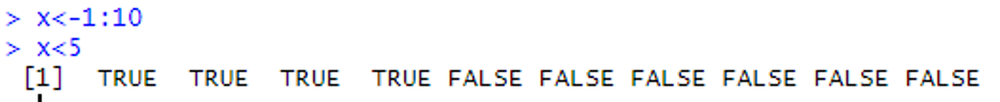
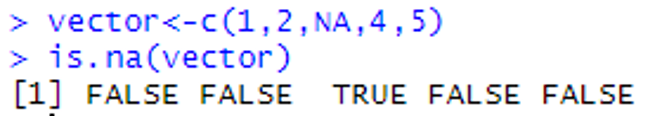

9 Other objects
9.1 Introduction
This document is part of our “First Steps in R” resources. In previous documents we discussed character and numeric vectors, matrices and data frames. It is assumed the reader is familiar with these topics. If you would like a recap, the materials are available on the MASH website. This document introduces the reader to some more commonly used kinds of object. If you are new to R, it is not necessary to know all the details of every object available but it is useful to know that they exist.
9.2 Factors
A factor is useful for storing categorical data. A factor is similar to a vector but R also keeps track of the “levels” of data. For example, if we are recording whether people are left or right handed, we might store our data in a vector like so:
handed <- c(“right”, “left”, “left”, “right”, “right”, “right”, “right”)
If we turn this data into a factor like so
eg_factor <- factor(handed)
We find that when we ask R to show us the object eg_factor we get:

eg_factor, with the levels of data, is shown in the console in RStudio.
The levels of data are left and right and this information is now also stored. We might need to use factors rather than character vectors because some functions expect data to be stored as a factor.
9.3 Lists
Vectors in R contain a “list” of values. Separately, a list is also a kind of object in R. A list-object can contain vectors, matrices, numbers, strings, data frames or anything else we can define as an object in R. To define a list we use the command list() and the objects we wish to put in the list go in the brackets separated by commas.
If we create several diverse objects like so:
x <- c(4,2,5,3,6)y <- matrix(1:20,4,5)z <- 8*7a <- c(“this”, “is”, “a”, “character”, “vector”)
We can then store them in a list like so:
eg_list <- list (x,y,z,a)
When we ask R to show us this list, we get the following:

x, y, z and a are stored in the list eg_list, outputted in the console in RStudio.
9.4 Logical Vectors
We have seen numeric and character vectors in previous documents. A third option is logical vectors. Logical values are TRUE and FALSE. R associates a numerical value of \(1\) with TRUE and \(0\) with FALSE.
Logical vectors are usually used to consider the properties of other vectors.
For example, if we define a vector x as \(1, 2, 3, \ldots, 10\) like so:
x <- 1:10
Then the command
x > 5
asks R to evaluate the statement x > 5 for each element of the vector x. A logical vector is returned like so:

x > 5 is evaluated for each element of the vector x, and a logical vector is outputted in the console in RStudio.
A useful command is:
is.na(vector_name_here)
which can be used like so:

vector is determined if it has the value NA and a logical vector is outputted in the console in RStudio.
The command
anyNA(vector_name_here)
will return a single result that is TRUE if a vector contains one or more value of NA and FALSE if there are no missing values in the vector.
9.5 Arrays
A matrix can be thought of as a \(2\)-dimensional “grid” of numbers (or character strings) like so:
\[ \begin{array}{|c|c|c|c|} \hline 2 & 4 & 1 & -5 \\ \hline 2 & 0 & 2 & 10 \\ \hline -8 & -1 & 6 & 8 \\ \hline 0 & -6 & -7 & 9 \\ \hline 3 & 21 & 4 & 8 \\ \hline \end{array} \]
An array is the same as a matrix except we can have more than \(2\) dimensions. For example, we can picture a \(3\)-dimensional array like the cube below. We would have one value in each of the small cubes:
In R we can define an array like so:
array_name <- array (data, dim = dimensions)
Here data is a vector containing the values to be put into the array and dimensions is a vector containing the dimensions of the array.
Example: If we wish to arrange the numbers \(1\) to \(27\) into a \(3 \times 3 \times 3\) cube we can do so thus:
eg_array <- array(1:27, dim = c(3,3,3))
R displays the array by showing one “layer” of the cube at a time like so:

eg_array is outputted in the console in RStudio.